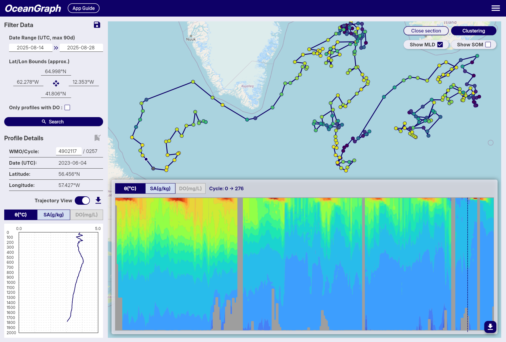
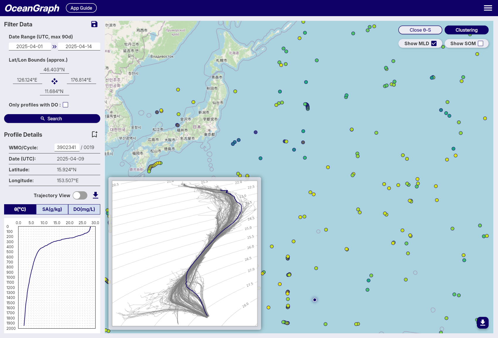
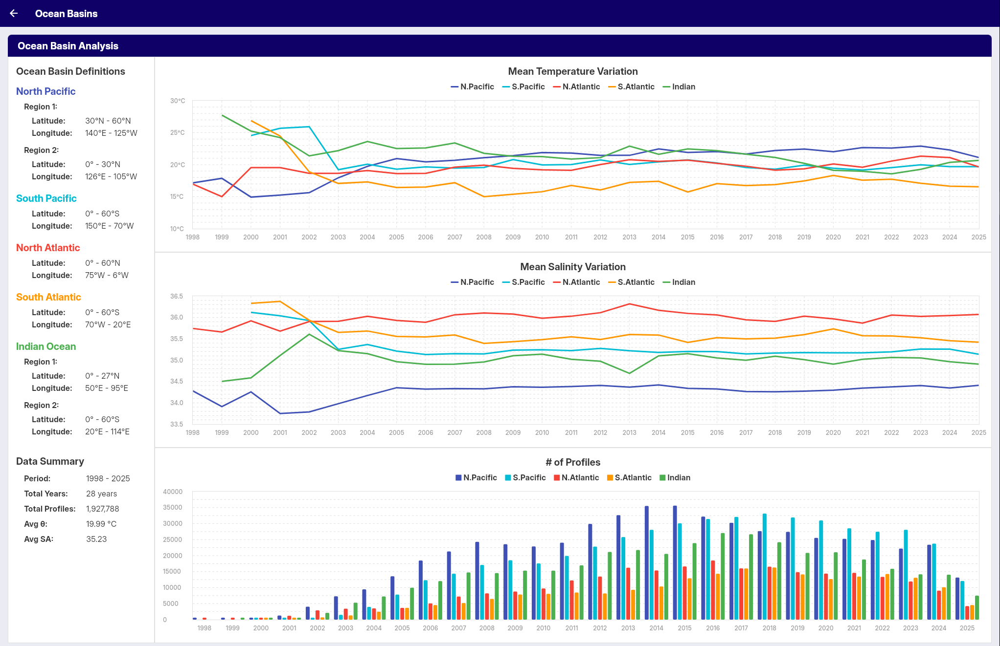
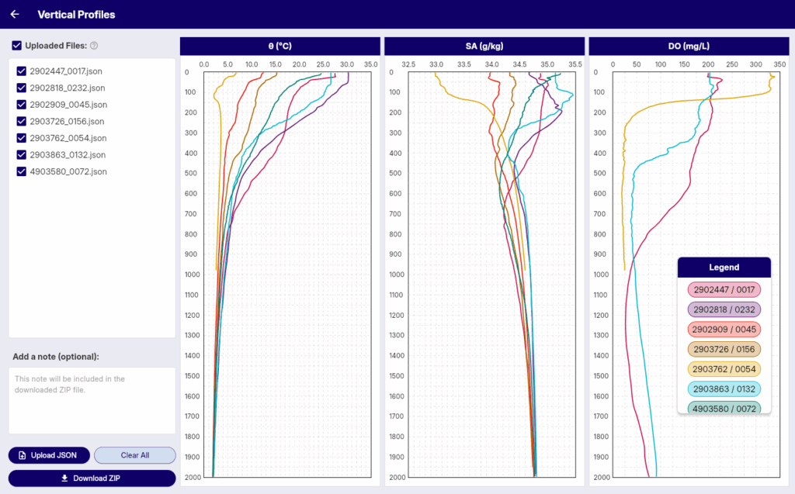

Introduction
OceanGraph is a web platform for visualizing and analyzing Argo float oceanographic data. It offers interactive tools and profile information for researchers, students, and ocean enthusiasts.
Data is updated weekly, with approximately one week's worth of new data typically added every weekend. Updates and notifications about data availability are posted on X (Twitter) at @OceanGraphJP.
Features
For everyone
- Search Argo floats worldwide by region and time (up to a 30-day date range)
- Search only profiles that include dissolved oxygen data
- Search by WMO ID for direct access to specific floats
- Track individual float trajectories
- Visualize time-series vertical sections of Argo float data
For signed-in users
All free features, plus:
- Search Argo floats with an extended date range (up to 90 days)
- Visualize vertical profiles of temperature, salinity, and oxygen
- View mixed layer depth from profile data
- View SOM (subsurface oxygen maximum) depth and its corresponding values
- Analyze T-S diagrams to explore water mass characteristics
- Download observation profile data for custom analysis
- Save screenshots of search results and visualizations
- Store up to 3 saved search conditions for repeated use (*)
- Bookmark up to 5 float profiles for later reference or comparison (*)
- Cluster Argo float profiles for pattern analysis
- Explore and compare ocean profiles with customizable tools
- Browse mode water analysis results
(*) Titles can contain up to 64 characters, and notes up to 200 characters.
App Guide
Data guide
Data source
These data were collected and made freely available by the International Argo Program and the national programs that contribute to it (http://www.argo.ucsd.edu, http://argo.jcommops.org). The Argo Program is part of the Global Ocean Observing System.
DOI: Argo (2000). Argo float data and metadata from Global Data Assembly Centre (Argo GDAC). SEANOE. http://doi.org/10.17882/42182
Data filtering policy
In OceanGraph, only carefully selected Argo float profiles are used according to the following conditions:
1. Selection of profiles
- Only real-time (
R,BR) and delayed-mode (D,BD) profiles are used. - If both real-time and delayed-mode profiles exist for the same cycle, the delayed-mode profile (D or BD) is preferred.
- Drift profiles (those with a
Dat the end ofCYCLE_NUMBER) are excluded.
2. Required variables
Only profiles that include all of the following variables are used:
PLATFORM_NUMBERCYCLE_NUMBERJULDJULD_QCLATITUDELONGITUDEPRES_ADJUSTEDPRES_ADJUSTED_QCTEMP_ADJUSTEDTEMP_ADJUSTED_QCPSAL_ADJUSTEDPSAL_ADJUSTED_QC
3. Date and position quality control
-
Only profiles with
JULD_QCvalues of 1 or 2 are used. -
Only profiles with
POSITION_QCvalues of 1 or 2 are used. -
Even if a profile passes the
POSITION_QCcheck, some data may still be unreliable. For example, as shown in the red circle below, caution is advised when interpreting such data.
Note: In some NetCDF files, multiple profiles can be present in a single file. In such cases, only the first profile (i.e., index 0) is used for further analysis, as illustrated in the example below:
# NetCDF file:
D5906026_128.nc
# JULD_QC:
[b'1' b'1']
# POSITION_QC:
[b'1' b'1']
# TEMP_QC:
[[b'1' b'1' b'1' ... b'1' b'1' b'1']
[b'1' b'1' b'1' ... nan nan nan]]
# TEMP:
[[7.743 7.745 7.745 ... 2.0353 1.9964 1.9618]
[7.7466 7.7459 7.7462 ... nan nan nan]]
4. Depth range restriction
Only data from depths shallower than 2000 dbar are retained. Additionally, layers with negative pressure values are removed along with their corresponding data (temperature, salinity, dissolved oxygen, etc.).
5. Profile quality filtering
Only profiles where at least 80% of PRES_ADJUSTED_QC, TEMP_ADJUSTED_QC, and PSAL_ADJUSTED_QC flags are either 1 or 2 are kept.
6. Layer-by-Layer filtering
- Only layers where the QC flags for pressure, temperature, and salinity are all 1 or 2 are kept.
- For dissolved oxygen (
DOXY_ADJUSTED):- Data are kept if the corresponding pressure, temperature, and salinity flags are all 1 or 2.
- The QC flag of DOXY itself is not used for filtering. This is because oxygen sensor quality can vary significantly, and applying its QC flag strictly may severely limit the available data.
- Users should carefully interpret dissolved oxygen data due to potential sensor uncertainties.
| pres_qc | temp_qc | psal_qc | doxy_qc | Judgment |
|---|---|---|---|---|
| 1 or 2 | 1 or 2 | 1 or 2 | 1 or 2 | PASS |
| 0 | 1 or 2 | 1 or 2 | 1 or 2 | FAIL |
| 1 or 2 | 0 | 1 or 2 | 1 or 2 | FAIL |
| 1 or 2 | 1 or 2 | 0 | 1 or 2 | FAIL |
| 1 or 2 | 1 or 2 | 1 or 2 | 0 (*) | PASS |
(*) DOXY quality flag is not used in filtering.
7. NaN value detection
After the layer-by-layer filtering, the system checks for any remaining NaN (Not a Number) values in the core variables:
- Pressure (
PRES_ADJUSTED) - Temperature (
TEMP_ADJUSTED) - Salinity (
PSAL_ADJUSTED)
If any NaN values are detected in these critical variables, the entire profile is rejected and removed from the dataset. This ensures data integrity and prevents computational errors in downstream analysis.
8. Interpolation of missing values for dissolved oxygen
For dissolved oxygen concentrations, which often contain missing (NaN) values, the following interpolation procedure is applied:
- Linear interpolation is used for internal (non-endpoint) missing values.
- Remaining missing values at the beginning or end of the profile are filled using backward-fill and forward-fill, respectively.
9. Duplicate pressure value removal
To ensure data integrity and maintain strictly increasing pressure sequences, duplicate pressure values are removed using a deterministic sorting approach:
- Pressure grouping: Data points are grouped by rounded pressure values (to 0.01 dbar precision).
- Deterministic selection: When multiple data points exist at the same pressure level, they are sorted by:
- Original pressure value
- Temperature value
- Salinity value
- First entry retention: The first entry from the sorted group is kept, while duplicates are discarded.
This process ensures that each profile has a unique, monotonically increasing pressure sequence, which is essential for accurate oceanographic analysis and prevents computational issues in downstream processing.
10. Pressure gap filtering
Profiles with excessively large gaps in pressure measurements are rejected and removed from the dataset to ensure data continuity. The filtering uses depth-dependent gap thresholds that become more permissive with increasing depth:
- 0-100 dbar: Maximum gap of 33.33 dbar
- 100-200 dbar: Maximum gap of 66.67 dbar
- 200-300 dbar: Maximum gap of 100 dbar
- 300-1000 dbar: Maximum gap increases proportionally (depth/3)
- >1000 dbar: Maximum gap of 500 dbar
This ensures that profiles maintain adequate vertical resolution throughout the water column, with stricter requirements in shallower waters where oceanographic gradients are typically steeper.
11. Oceanographic parameter conversion
To ensure consistency with oceanographic standards, the following parameter conversions are applied:
- Temperature to potential temperature (θ): In-situ temperature is converted to potential temperature using the TEOS-10 Gibbs Seawater (GSW) oceanographic toolbox.
- Practical salinity to absolute salinity (SA): Practical salinity is converted to absolute salinity using the GSW toolbox, taking into account the geographic location (latitude/longitude) and pressure.
These conversions provide more accurate representations of water mass properties by removing the effects of pressure and enabling precise oceanographic calculations. Profiles that encounter computational errors during these conversions are rejected to maintain data quality.
12. Decimal precision
To reduce data size, the values are rounded to the nearest values shown below:
| Variable | Precision |
|---|---|
| Pressure | 0.01 |
| Temperature | 0.001 |
| Salinity | 0.001 |
| Dissolved oxygen concentration | 0.001 |
Limitations
Missing Values in Vertical Section Charts
-
Masked Areas Without Original Data
When generating time-series vertical section charts of Argo float data, interpolation (e.g., using scipy.interpolate.griddata) is used to transform irregularly spaced profile data into a regular grid. Some areas may remain unfilled where original profile data are missing. To address this, we apply a mask after gridding to exclude regions without valid observations, setting those values to NaN.
In the example image below, these masked areas appear as uncolored gaps in the vertical section.
-
Sparse Data Due to Quality Control
After applying quality control, some profiles may be excluded, resulting in a sparser time series. Even if valid profiles are present at certain time steps, the interpolation process may not be able to generate a continuous vertical section. This leads to sections where observation points exist (trajectory figure) but the interpolated chart shows gray or missing areas (vertical section figure), indicating insufficient data density for interpolation.
This can be seen in the same image where gray regions appear in the section chart, even though observation points are visible in the trajectory chart above.

Please keep this in mind when interpreting the charts.
Usage guide
Searching and Analyzing Argo Floats
Search and Bookmark
OceanGraph provides search capabilities to find Argo float profiles based on geographic, temporal, and data quality criteria.
Search Methods
Filter Data Panel
-
Date Range
- Available: October 1999 to present
- Click date fields to select start and end dates
- All times in UTC
-
Geographic Bounds
- Set by interacting with the map
- Coordinates displayed with N/S/E/W format
-
Data Quality
- "Only profiles with DO" checkbox for dissolved oxygen data
-
Save Search Conditions
Note: Available to signed-in users only
- Click save icon to save current search parameters
- Automatic naming by date range
- Access saved searches across sessions
Profile Details Panel
-
WMO ID Search
- Enter WMO ID and press Enter
- Returns all profiles for that specific float
-
Profile Information
- WMO ID, Cycle Number, Date (UTC), Latitude, Longitude
-
Bookmark Profiles
Note: Available to signed-in users only
- Click bookmark icon to save profiles
- Status indication prevents duplicates
- Access bookmarks across sessions
Search Results
- Result count notification
- Profiles displayed as map markers
- Click markers to view profile details
Tips
- Start with broad searches, then narrow down
- Use dissolved oxygen filter for biogeochemical studies
- Save frequently used search patterns
- Bookmark important profiles for future reference
Trajectory and Time-Series Vertical Section
This feature allows you to visualize Argo float data as a time-series vertical section, showing how oceanographic parameters change with depth and time along the float's trajectory. The vertical section provides a comprehensive view of the water column structure throughout the float's journey.

Accessing Time-Series Vertical Sections
To access time-series vertical sections of Argo float data, follow these steps:
- Select a Float: Start by selecting an Argo float from the search results or the map view.
- Turn on Trajectory mode: Turn on the "Trajectory Mode" button to display the vertical section view.
- Show vertical section: Click on the "View Section" button to view the time-series data for the selected float.
Tips
- The vertical section is linked with the vertical profiles in Profile Details, and the position of the selected profile is shown with a dashed line.
- Missing data areas indicate locations where data did not pass quality control (QC).
θ-S Diagram
The θ-S diagram feature allows you to visualize potential temperature-absolute salinity relationships of Argo float profiles in the current search area.

Accessing θ-S Diagram
The θ-S diagram is available to logged-in users only.
- After performing a search, click the View θ-S button in the top-right corner of the map
- The system will generate a θ-S diagram based on the current search results
- The diagram appears as an overlay on the map
Profile Limit
- Maximum 500 profiles can be used to generate a θ-S diagram
- If your search contains more than 500 profiles, an error message will appear
- Narrow your search criteria to reduce the number of profiles
θ-S Diagram Display
Background Chart
- Shows potential temperature (vertical axis) vs absolute salinity (horizontal axis) relationships
- Displays density contour lines and water mass boundaries
Selected Profile Line
- When you select a float on the map, its temperature-salinity profile is highlighted
- Appears as a colored line overlaying the background chart
- Updates automatically when you select different floats
Tips
- Use it to identify different water masses and their characteristics
- The diagram helps understand the oceanographic context of your selected profiles
Background
A θ-S diagram (Temperature-Salinity diagram) is a fundamental tool in oceanography for:
- Identifying water masses and their properties
- Understanding mixing processes between different water types
- Analyzing the vertical structure of the water column
- Detecting seasonal and regional variations in ocean properties
Clustering
OceanGraph provides a beta feature that clusters Argo profiles based on their vertical structure using machine learning. This functionality is experimental and comes with the following limitations and processing steps:
-
Profile Limit
- To reduce server load and memory usage, clustering accepts a maximum of 500 valid profiles per job.
-
Depth Range & Interpolation
- The depth range used for clustering is dynamically determined based on the input profiles:
- Minimum depth: Fixed at 200 dbar to suppress the effects of seasonal thermocline and surface forcing.
- Maximum depth: Automatically set to the 25th percentile of maximum depths across all valid profiles, then rounded down to the nearest 100 dbar increment.
- The maximum depth is capped at 1000 dbar and will not go below the minimum depth of 200 dbar.
- If most of the selected profiles are shallow, the maximum depth threshold is adjusted downward to maximize data utilization.
- Profiles are linearly interpolated every 100 dbar within this determined range to align them on a common vertical grid.
- This adaptive approach ensures optimal clustering performance regardless of the depth characteristics of the selected profiles.
- The depth range used for clustering is dynamically determined based on the input profiles:
-
Required Variables
- Only profiles containing valid temperature and salinity data are considered.
- Profiles missing these variables or lacking coverage in the specified depth range are excluded.
-
Clustering Feature Vector
- Clustering is based on a feature vector composed of interpolated temperature and salinity values, combined with location data.
- Temperature and salinity vectors are standardized using z-score normalization at each depth level to ensure that variations at all depths contribute equally to the clustering process.
- Latitude is included as an additional feature, normalized by linear scaling from -90 to 90 degrees into a range of -1 to 1.
- Longitude is transformed into two features using its sine and cosine values (i.e., sin(λ), cos(λ)), allowing for circular continuity around the ±180° meridian without further normalization.
-
Automatic K Determination
- The number of clusters (K) is selected automatically using a simplified elbow method (with a maximum of 8 clusters).
This feature is available to signed-in users only. While we are actively improving this system, unexpected results or limitations may occur. We appreciate your understanding during this beta period.
 Note: Gray markers indicate profiles that were excluded from clustering.
Note: Gray markers indicate profiles that were excluded from clustering.
Mixed Layer Depth (MLD)
OceanGraph calculates the mixed layer depth (MLD) from individual Argo float profiles based on potential temperature (θ), using the Gibbs SeaWater (GSW) Oceanographic Toolbox for accurate thermodynamic calculations. This method follows a temperature threshold approach, which is commonly used in oceanographic studies.
-
Multi-Parameter Calculation
- MLD is determined using three different oceanographic parameters: potential temperature (θ), absolute salinity, and potential density (σθ).
- Potential temperature and density are calculated using the GSW toolbox based on practical salinity, in-situ temperature, pressure, and latitude.
- This ensures high accuracy and consistency in the estimation of stratification and mixed layer properties across different oceanographic conditions.
-
MLD Definition and Threshold
- The MLD is calculated using three different threshold criteria and defined as the shallowest depth among the three methods:
- Temperature threshold (Δθ): Depth where potential temperature (θ) differs by more than 0.5°C from its value at 10 dbar
- Salinity threshold (ΔSA): Depth where absolute salinity differs by more than 0.05 g/kg from its value at 10 dbar
- Density threshold (Δσθ): Depth where potential density (σθ) differs by more than 0.125 kg/m³ from its value at 10 dbar
- This multi-parameter approach provides a more robust estimation of the mixed layer depth by considering both thermal and haline stratification.
- If no depth is found using any of the three criteria, the MLD is considered undefined for that observation.
- The MLD is calculated using three different threshold criteria and defined as the shallowest depth among the three methods:
-
Data Quality Requirements
- Reference Depth Coverage: The reference depth (10 dbar) must be within the measured pressure range of the profile. If the reference depth falls outside the available data range, MLD calculation is skipped for that profile.
- Shallow Data Availability: A minimum of 3 data points at or above 50 dbar is required for reliable MLD calculation. Profiles with insufficient shallow measurements are excluded from MLD computation to ensure accuracy.
-
Conversion to Depth
- The estimated MLD (in decibars) is converted into physical depth (in meters) using a latitude-dependent algorithm from the UNESCO 1983 standard.
- This conversion allows MLD values to be spatially visualized or regionally compared using consistent units.
-
Color Representation
- For visualizations such as maps, MLD values are mapped to colors using the reversed Viridis colormap (viridis_r in matplotlib), where shallow layers appear bright and deeper layers appear dark.
- Profiles with missing or undefined MLD values are rendered in gray.
This approach provides an accurate and robust estimation of mixed layer depth across a wide range of Argo float profiles by utilizing multiple oceanographic parameters. The multi-threshold method ensures that the MLD estimation captures both thermal and haline stratification effects, making it particularly well-suited for visual analysis and regional comparisons in diverse oceanographic environments.
Subsurface Oxygen Maximum (SOM)
OceanGraph calculates the subsurface oxygen maximum (SOM) for individual Argo float profiles using dissolved oxygen and pressure (or depth) data. This metric is widely used in oceanography to characterize the vertical structure of oxygen, especially in subtropical and tropical regions, where a local maximum often appears just below the surface mixed layer.
-
Definition and Search Range
- The SOM is defined as the local maximum of dissolved oxygen concentration found within the subsurface layer, between the mixed layer depth + 5 dbar and 300 dbar.
- The very shallow layers (e.g., 0–10 dbar) are excluded to avoid the influence of transient surface processes and ensure the detected maximum is truly subsurface.
-
Identification of Local Maximum
- Within the specified pressure range, the oxygen profile is scanned for local maxima, defined as points where the dissolved oxygen concentration is greater than at both adjacent pressure levels.
- If multiple local maxima are present, the one with the highest oxygen concentration is selected as the SOM.
-
Fallback if No Local Maximum Exists
- If no local maximum exists within the subsurface layer (e.g., if the profile is monotonic), the single highest dissolved oxygen concentration within this range is selected as the SOM.
-
Output
- The pressure (or depth) and the corresponding dissolved oxygen concentration of the SOM are recorded for each profile.
- If no valid SOM can be identified (e.g., due to insufficient data points), the SOM is considered undefined for that observation.
Exploring Analysis Results
Visual Lab
Ocean Basins
Overview
The Ocean Basins feature provides time series visualization of average temperature and salinity changes across the world's major ocean basins. This tool displays long-term oceanographic trends using Argo float data from 1998 to the present.

Ocean Basins Coverage
The analysis covers five major ocean basins: North Pacific, South Pacific, North Atlantic, South Atlantic, and Indian Ocean. Each basin's data is analyzed separately to reveal regional trends.
Data Visualization
Temperature and Salinity Graphs
The feature displays two main types of time series:
- Average Temperature: Long-term trends in ocean potential temperature by basin
- Average Salinity: Long-term trends in ocean absolute salinity by basin
Data Parameters
- Temperature: Potential temperature (θ) values at 10 dbar depth
- Salinity: Absolute salinity (SA) values at 10 dbar depth
Time Period
- Coverage: 1998 to present year
- Data Source: Argo float profile measurements interpolated using the Akima method
- Temporal Resolution: Annual
Profile Count Display
The visualization includes an additional bar chart showing:
- Annual Profile Count: Number of Argo profiles used each year for each basin
This profile count chart helps users understand data density and reliability over time.
Applications
This tool is useful for:
- Understanding regional ocean climate variations
- Identifying long-term trends in ocean temperature and salinity
- Comparing oceanographic changes between different basins
- Educational purposes and oceanographic research
Mode Water Analysis
The Mode Water Analysis feature displays the detection and time series visualization of mode water layers in Argo float profiles.

This tool provides:
- Detection of mode water layers in profiles based on specified criteria
- Count of profiles containing mode water by season
- Time series visualization of mode water thickness trends
- Statistical display of thickness values (median and quartiles)
Detection Criteria
Mode water detection uses criteria displayed on the screen (latitude/longitude bounds, density range, potential vorticity threshold, and minimum thickness).
Results Display
The panel displays:
- Total Profiles: Number of profiles containing detected mode water layers
- Mean Thickness: Average thickness of detected mode water layers
Graphs
Time Series Graph
Displays mode water thickness over time:
- Median Thickness: 50th percentile (solid blue line)
- Lower Quartile: 25th percentile (dashed gray line)
- Upper Quartile: 75th percentile (dashed gray line)
- Time Scale: Seasonal data from 2001 onwards
Profile Count Graph
Shows the number of profiles containing mode water:
- Blue Bars: Number of profiles per season
- Time Scale: Seasonal data from 2001 onwards
Data Processing
Quality Control
The analysis applies strict quality control measures to ensure reliable results:
-
Geographic Filtering
- Only profiles within the specified target region are analyzed
- Profiles outside the geographic bounds are excluded
-
Profile Depth Requirements
- Minimum profile depth: 500 dbar (approximately 500m)
- Profiles that are too shallow are excluded from analysis
-
Data Completeness
- Minimum 10 valid data points required per profile (temperature, salinity, pressure)
- Minimum 5 valid density data points required for mode water calculation
- Minimum 3 valid data points required for potential vorticity calculation
- Profiles with insufficient temperature, salinity, or pressure data are excluded
- Missing or invalid data points are removed before analysis
- Mode water layers must be ≥10m thickness to be included in analysis
Seasonal Grouping
Data is grouped by meteorological seasons:
- Winter: December, January, February
- Spring: March, April, May
- Summer: June, July, August
- Autumn: September, October, November
Background
Mode waters are water masses characterized by weak vertical gradients in temperature and salinity, forming relatively uniform layers. They are created by deep winter mixed layers and play important roles in ocean circulation.
This feature displays basic statistics and time series of detected mode water layers in the specified region.
Performing Custom Analysis
Analysis Lab
Vertical Profiles
The Vertical Profile Viewer is a feature of OceanGraph that allows you to visualize and compare vertical profiles of oceanographic data.

With this tool, you can:
- Upload one or more JSON files containing vertical profile data.
- Visualize temperature, salinity, and dissolved oxygen by depth.
- Add brief notes for each uploaded profile.
- Download the annotated charts as images for sharing or further analysis.
This feature is designed for researchers, students, and ocean enthusiasts who wish to analyze and compare their own custom oceanographic data — especially data that follows the variable structure commonly used in Argo float observations.
Supported JSON Format
The JSON structure used in this tool is based on the variable naming conventions of Argo float profiles. Each uploaded file must be a JSON file with the following keys:
{
"pressure": [ ... ],
"potential_temperature": [ ... ],
"absolute_salinity": [ ... ],
"oxygen": [ ... ],
"wmo_id": "2902447",
"cycle_number": 17
}
"pressure": array of numbers (required, must not be empty)"potential_temperature": array of numbers (same length aspressure, if present)"absolute_salinity": array of numbers (same length aspressure, if present)"oxygen": array of numbers (same length aspressure, if present)"wmo_id": string (required)"cycle_number": number (required)
Any additional keys will be ignored. Files that do not follow the required structure or fail validation will be skipped during upload.
Legal Guide
Terms of Service
Article 1 (Application)
These Terms of Service ("Terms") set forth the conditions for the use of the service "OceanGraph" ("Service") provided by an individual developer ("we" or "us") and govern the relationship between us and the users of the Service ("Users").
Article 2 (User Registration)
- Those wishing to register must agree to these Terms and register the required information to use the Service.
- We reserve the right, at our sole discretion, to refuse or cancel registration without any obligation to disclose the reasons.
Article 3 (Prohibited Actions)
Users must not engage in the following acts:
- Acts that violate laws or public order and morals
- Acts that infringe on the rights of other users or third parties
- Acts that interfere with the operation of the Service
- Any acts deemed inappropriate by us
Article 4 (Suspension or Termination of Service)
We may suspend or terminate the provision of the Service under the following circumstances:
- When conducting maintenance or system updates
- In the event of force majeure such as fire, power outage, disaster, or natural calamity
- When deemed necessary for operational or technical reasons
Article 5 (Disclaimer)
- We make no warranty, either express or implied, regarding the Service, including but not limited to its safety, reliability, accuracy, completeness, or fitness for a particular purpose.
- We shall not be liable for any direct, indirect, special, incidental, or consequential damages arising from the use or inability to use the Service.
- We shall not be liable for any disputes between users or between users and third parties.
Article 6 (Governing Law and Jurisdiction)
These Terms shall be governed by the laws of Japan, and the Kanazawa District Court shall have exclusive jurisdiction as the court of first instance for any disputes arising out of or relating to these Terms.
Privacy Policy
Article 1 (Information Collected)
We may collect the following information:
- Email address
- Password
- IP address, browser information, usage logs
- Cookies and similar identifiers
Article 2 (Purpose of Use)
The collected information will be used for the following purposes:
- Providing and operating the Service
- User identity verification and authentication functions
- Analyzing usage and improving the Service
- Responding to user inquiries regarding service usage
- Preventing unauthorized use and access
Article 3 (Disclosure of Information to Third Parties)
We will not disclose personal information to third parties without user consent unless required by law. However, we may provide information to contractors to the extent necessary for service operation, and we will properly manage and supervise them.
Article 4 (Security Management)
We will take appropriate security measures to prevent leakage, tampering, or loss of collected information.
Article 5 (Use of External Services)
We may use external services for purposes such as email delivery, data storage, and authentication in the operation of the Service. When using such services, necessary and minimal user information may be provided to third-party operators.
Article 6 (Changes to the Privacy Policy)
We may revise this Privacy Policy as necessary. In the event of significant changes, we will notify users appropriately.
利用規約
第1条（適用）
本規約は、個人開発者（以下「当方」といいます）が提供するサービス「OceanGraph」（以下「本サービス」）の利用に関する条件を、本サービスの利用者（以下「ユーザー」）との間で定めるものです。
第2条（利用登録）
- 登録希望者は、本規約に同意の上、所定の情報を登録することで、本サービスを利用できます。
- 当方は、自己の裁量により、登録希望者の利用登録を拒否または取消すことができるものとします。拒否理由については一切開示義務を負いません。
第3条（禁止事項）
ユーザーは以下の行為をしてはなりません：
- 法令または公序良俗に違反する行為
- 他のユーザーや第三者の権利を侵害する行為
- 本サービスの運営を妨害する行為
- 当方が不適切と判断する一切の行為
第4条（サービスの提供の停止）
当方は、以下の場合にサービス提供を一時停止または終了できるものとします：
- メンテナンスやシステム更新を行う場合
- 火災、停電、災害、天災地変等の不可抗力により運営が困難となった場合
- その他、当方がサービス運営上必要と判断した場合
第5条（免責事項）
- 当方は、本サービスに関して、事実上または法律上の瑕疵（安全性、信頼性、正確性、完全性、特定目的適合性、セキュリティ等を含みますが、これに限りません）について一切の保証を行いません。
- 本サービスの利用または利用不能により、ユーザーに生じた直接的・間接的・特別・付随的・結果的損害について、当方は一切責任を負いません。
- ユーザー間またはユーザーと第三者との間で生じたトラブルについて、当方は一切責任を負いません。
第6条（準拠法・裁判管轄）
本規約は日本法に準拠し、紛争が生じた場合は金沢地方裁判所を第一審の専属的合意管轄裁判所とします。
プライバシーポリシー
第1条（取得する情報）
当方は、以下の情報を取得する場合があります：
- メールアドレス
- パスワード
- IPアドレス、ブラウザ情報、利用履歴
- Cookie等の識別子
第2条（利用目的）
取得した情報は、以下の目的で利用します：
- 本サービスの提供・運営
- 本人確認、認証機能の提供
- 利用状況の分析およびサービス改善
- サービス利用に関するお問い合わせ対応
- 不正利用・不正アクセスの防止及び対策
第3条（情報の第三者提供）
当方は、法令に基づく場合を除き、ユーザーの同意なく第三者に個人情報を提供することはありません。ただし、サービスの提供に必要な範囲で、業務委託先に情報を提供する場合があります。その際は、適切な管理および監督を行います。
第4条（安全管理）
当方は、取得した情報について、漏洩・改ざん・紛失を防止するために適切な安全管理措置を講じます。
第5条（外部サービスの利用）
当方は、サービスの運営にあたり、メール配信、データ保存、認証等の目的で外部サービスを利用する場合があります。外部サービスの利用に伴い、必要最小限の範囲で情報が外部事業者に提供されることがあります。
第6条（プライバシーポリシーの変更）
当方は、本ポリシーの内容を必要に応じて変更することがあります。重要な変更を行う場合には、適切な方法によりユーザーに通知します。
Contact information
- If you encounter any bugs or have feature requests, please submit them via Issues.
- For other inquiries, feel free to contact us at support(at)unvelyze.com.